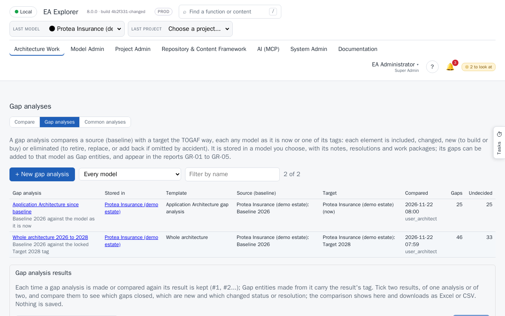

Run a gap analysis between two models
For: Practising architects, Model Admin
A baseline and a target compared, with the gaps kept.

#/compare/gapsWhy do this
Comparing a baseline with a target, entity by entity, shows what must be added, changed or removed. Giving each gap a resolution is the first step to a plan. See The ADM: how architecture work is done.
Nothing in EA Explorer is lost: every change is kept, moments can be named, and work can happen in copies that merge back after review. This is what lets many people change one model without fear.
In TOGAF terms: Phases B to E: gap analysis between baseline and target. See EA Explorer and the TOGAF Standard.
The goal: The gaps between a baseline and a target are listed.
Steps
- Open Architecture Work › Compare models › Gap analysis.
- Pick the baseline and the target (models or tags).
- Read the gaps; give each a resolution; Save.